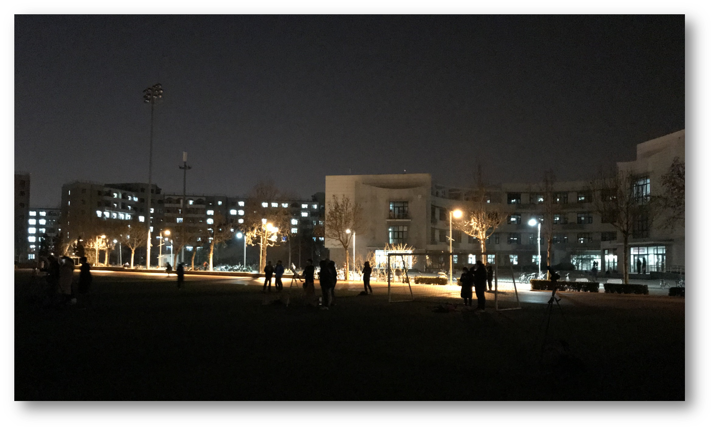
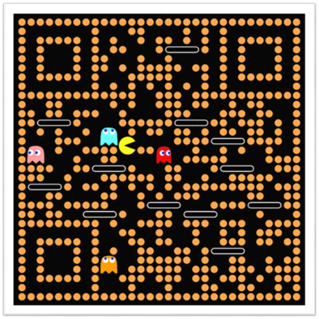

<!DOCTYPE html>
<html>
<head>
    <!-- hexo-inject:begin --><!-- hexo-inject:end --><meta charset="utf-8">
    
    <title>About Dawn-Wow Association | 晨曦图书馆</title>
    
    
        <meta name="keywords" content="About Dawn-Wow Association">
    
    <meta name="viewport" content="width=device-width, initial-scale=1, maximum-scale=1">
    <meta name="description" content="A brief Biography Dawn-Wow Association 成立于2019年9月1日 起初由 Onion Knight 和 Rubilacxe 提议成立，公会名称也由二人拟定。 公会成立的本意是找到一群志同道合的伙伴，成立一个游戏小分队，可以比较惬意的享受游戏而不受大公会规章的约束。因此定义公会为休闲公会，由 Onion Knight 负责招人。 经历过一段时间的发展 Oni">
<meta property="og:type" content="website">
<meta property="og:title" content="About Dawn-Wow Association">
<meta property="og:url" content="https://dawn-wow.info/about/index.html">
<meta property="og:site_name" content="晨曦图书馆">
<meta property="og:description" content="A brief Biography Dawn-Wow Association 成立于2019年9月1日 起初由 Onion Knight 和 Rubilacxe 提议成立，公会名称也由二人拟定。 公会成立的本意是找到一群志同道合的伙伴，成立一个游戏小分队，可以比较惬意的享受游戏而不受大公会规章的约束。因此定义公会为休闲公会，由 Onion Knight 负责招人。 经历过一段时间的发展 Oni">
<meta property="og:image" content="https://dawn-wow.info/about/chenxi3.png">
<meta property="og:image" content="https://dawn-wow.info/about/tsinghua3.png">
<meta property="og:image" content="https://dawn-wow.info/about/chenxierweima.png">
<meta property="og:updated_time" content="2019-10-23T09:21:43.755Z">
<meta name="twitter:card" content="summary">
<meta name="twitter:title" content="About Dawn-Wow Association">
<meta name="twitter:description" content="A brief Biography Dawn-Wow Association 成立于2019年9月1日 起初由 Onion Knight 和 Rubilacxe 提议成立，公会名称也由二人拟定。 公会成立的本意是找到一群志同道合的伙伴，成立一个游戏小分队，可以比较惬意的享受游戏而不受大公会规章的约束。因此定义公会为休闲公会，由 Onion Knight 负责招人。 经历过一段时间的发展 Oni">
<meta name="twitter:image" content="https://dawn-wow.info/about/chenxi3.png">
    

    
        <link rel="alternate" href="/atom.xml" title="晨曦图书馆" type="application/atom+xml">
    

    
        <link rel="icon" href="/images/wiki.png">
    

    <link rel="stylesheet" href="/libs/font-awesome/css/font-awesome.min.css">
    <link rel="stylesheet" href="/libs/open-sans/styles.css">
    <link rel="stylesheet" href="/libs/source-code-pro/styles.css">

    <link rel="stylesheet" href="/css/style.css">
    <script src="/libs/jquery/2.1.3/jquery.min.js"></script>
    <script src="/libs/jquery/plugins/cookie/1.4.1/jquery.cookie.js"></script>
    
    
        <link rel="stylesheet" href="/libs/lightgallery/css/lightgallery.min.css">
    
    
        <link rel="stylesheet" href="/libs/justified-gallery/justifiedGallery.min.css"><!-- hexo-inject:begin --><!-- hexo-inject:end -->
    
    
    
    


</head>
</html>
<body>
    <!-- hexo-inject:begin --><!-- hexo-inject:end --><div id="container">
        <header id="header">
    <div id="header-main" class="header-inner">
        <div class="outer">
            <a href="/" id="logo">
                <i class="logo"></i>
                <span class="site-title">晨曦图书馆</span>
            </a>
            <nav id="main-nav">
                
                    <a class="main-nav-link" href="/">首页</a>
                
                    <a class="main-nav-link" href="/archives">归档</a>
                
                    <a class="main-nav-link" href="/categories">分类</a>
                
                    <a class="main-nav-link" href="/tags">标签</a>
                
                    <a class="main-nav-link" href="/about">关于晨曦</a>
                
                    <a class="main-nav-link" href="http://cn.60wdb.com" rel="external nofollow noopener noreferrer" target="_blank">六零数据库</a>
                
            </nav>
            
            <div id="search-form-wrap">

    <form class="search-form">
        <input type="text" class="ins-search-input search-form-input" placeholder="Search">
        <button type="submit" class="search-form-submit"></button>
    </form>
    <div class="ins-search">
    <div class="ins-search-mask"></div>
    <div class="ins-search-container">
        <div class="ins-input-wrapper">
            <input type="text" class="ins-search-input" placeholder="Type something...">
            <span class="ins-close ins-selectable"><i class="fa fa-times-circle"></i></span>
        </div>
        <div class="ins-section-wrapper">
            <div class="ins-section-container"></div>
        </div>
    </div>
</div>
<script>
(function (window) {
    var INSIGHT_CONFIG = {
        TRANSLATION: {
            POSTS: 'Posts',
            PAGES: 'Pages',
            CATEGORIES: 'Categories',
            TAGS: 'Tags',
            UNTITLED: '(Untitled)',
        },
        ROOT_URL: '/',
        CONTENT_URL: '/content.json',
    };
    window.INSIGHT_CONFIG = INSIGHT_CONFIG;
})(window);
</script>
<script src="/js/insight.js"></script>

</div>
        </div>
    </div>
    <div id="main-nav-mobile" class="header-sub header-inner">
        <table class="menu outer">
            <tr>
                
                    <td><a class="main-nav-link" href="/">首页</a></td>
                
                    <td><a class="main-nav-link" href="/archives">归档</a></td>
                
                    <td><a class="main-nav-link" href="/categories">分类</a></td>
                
                    <td><a class="main-nav-link" href="/tags">标签</a></td>
                
                    <td><a class="main-nav-link" href="/about">关于晨曦</a></td>
                
                    <td><a class="main-nav-link" href="http://cn.60wdb.com" rel="external nofollow noopener noreferrer" target="_blank">六零数据库</a></td>
                
                <td>
                    
    <div class="search-form">
        <input type="text" class="ins-search-input search-form-input" placeholder="Search">
    </div>

                </td>
            </tr>
        </table>
    </div>
</header>

        <div class="outer">
            
            
                <aside id="sidebar">
   
        
    <div class="widget-wrap" id="categories">
        <h3 class="widget-title">
            <span>categories</span>
            &nbsp;
            <a id="allExpand" href="#">
                <i class="fa fa-angle-double-down fa-2x"></i>
            </a>
        </h3>
        
        
        
         <ul class="unstyled" id="tree"> 
                    <li class="directory">
                        <a href="#" data-role="directory">
                            <i class="fa fa-folder"></i>
                            &nbsp;
                            公会建设
                        </a>
                         <ul class="unstyled" id="tree">  <li class="file"><a href="/wiki/关于晨曦公会活动制度的说明/">关于晨曦公会活动制度的说明</a></li>  </ul> 
                    </li> 
                    
                    <li class="directory">
                        <a href="#" data-role="directory">
                            <i class="fa fa-folder"></i>
                            &nbsp;
                            晨曦夜话
                        </a>
                         <ul class="unstyled" id="tree">  <li class="file"><a href="/wiki/洋葱骑士的异世界之旅/">洋葱骑士的异世界之旅（一）</a></li>  </ul> 
                    </li> 
                     <li class="file"><a href="/wiki/index/">Welcome to 晨曦公会</a></li>  </ul> 
    </div>
    <script>
        $(document).ready(function() {
            var iconFolderOpenClass  = 'fa-folder-open';
            var iconFolderCloseClass = 'fa-folder';
            var iconAllExpandClass = 'fa-angle-double-down';
            var iconAllPackClass = 'fa-angle-double-up';
            // Handle directory-tree expansion:
            // 左键单独展开目录
            $(document).on('click', '#categories a[data-role="directory"]', function (event) {
                event.preventDefault();

                var icon = $(this).children('.fa');
                var expanded = icon.hasClass(iconFolderOpenClass);
                var subtree = $(this).siblings('ul');
                icon.removeClass(iconFolderOpenClass).removeClass(iconFolderCloseClass);
                if (expanded) {
                    if (typeof subtree != 'undefined') {
                        subtree.slideUp({ duration: 100 });
                    }
                    icon.addClass(iconFolderCloseClass);
                } else {
                    if (typeof subtree != 'undefined') {
                        subtree.slideDown({ duration: 100 });
                    }
                    icon.addClass(iconFolderOpenClass);
                }
            });
            // 右键展开下属所有目录
            $('#categories a[data-role="directory"]').bind("contextmenu", function(event){
                event.preventDefault();
                
                var icon = $(this).children('.fa');
                var expanded = icon.hasClass(iconFolderOpenClass);
                var listNode = $(this).siblings('ul');
                var subtrees = $.merge(listNode.find('li ul'), listNode);
                var icons = $.merge(listNode.find('.fa'), icon);
                icons.removeClass(iconFolderOpenClass).removeClass(iconFolderCloseClass);
                if(expanded) {
                    subtrees.slideUp({ duration: 100 });
                    icons.addClass(iconFolderCloseClass);
                } else {
                    subtrees.slideDown({ duration: 100 });
                    icons.addClass(iconFolderOpenClass);
                }
            })
            // 展开关闭所有目录按钮
            $(document).on('click', '#allExpand', function (event) {
                event.preventDefault();
                
                var icon = $(this).children('.fa');
                var expanded = icon.hasClass(iconAllExpandClass);
                icon.removeClass(iconAllExpandClass).removeClass(iconAllPackClass);
                if(expanded) {
                    $('#sidebar .fa.fa-folder').removeClass('fa-folder').addClass('fa-folder-open')
                    $('#categories li ul').slideDown({ duration: 100 });
                    icon.addClass(iconAllPackClass);
                } else {
                    $('#sidebar .fa.fa-folder-open').removeClass('fa-folder-open').addClass('fa-folder')
                    $('#categories li ul').slideUp({ duration: 100 });
                    icon.addClass(iconAllExpandClass);
                }
            });  
        });
    </script>

    
        
    <div class="widget-wrap widget-list">
        <h3 class="widget-title"><span>links</span></h3>
        <div class="widget">
            <ul>
                
                    <li>
                        <a href="http://acfun.cn" rel="external nofollow noopener noreferrer" target="_blank">Acfun</a>
                    </li>
                
                    <li>
                        <a href="http://bilibili.com" rel="external nofollow noopener noreferrer" target="_blank">Bilibili</a>
                    </li>
                
                    <li>
                        <a href="https://www.venganza.org/" rel="external nofollow noopener noreferrer" target="_blank">Church of the FSM</a>
                    </li>
                
                    <li>
                        <a href="http://www.scp-wiki.net/" rel="external nofollow noopener noreferrer" target="_blank">SCP-Foundation</a>
                    </li>
                
                    <li>
                        <a href="https://www.pixiv.net/" rel="external nofollow noopener noreferrer" target="_blank">Pixiv</a>
                    </li>
                
                    <li>
                        <a href="https://en.wikiquote.org/" rel="external nofollow noopener noreferrer" target="_blank">Wikiquote</a>
                    </li>
                
            </ul>
        </div>
    </div>


    
    <div id="toTop" class="fa fa-angle-up"></div>
</aside>
            
            <section id="main"><article id="page-" class="article article-type-page" itemscope="" itemprop="blogPost">
    <div class="article-inner">
        
        
            <header class="article-header">
                
                
    
        <h1 class="article-title" itemprop="name">
            About Dawn-Wow Association
        </h1>
    

            </header>
        
        
        <div class="article-entry" itemprop="articleBody">
        
        
            
        
        
            <p></p>
<h3 id="A-brief-Biography"><a href="#A-brief-Biography" class="headerlink" title=" A brief Biography"></a><i class="fa fa-id-card-o fa-lg" aria-hidden="true"></i> A brief Biography</h3><ul>
<li><strong><em><font title="&nbsp; 晨曦公会">Dawn-Wow Association</font></em></strong> 成立于2019年9月1日 起初由 <strong><em><font title="&nbsp; 洋葱骑士">Onion Knight</font></em></strong> 和 <strong><em><font title="&nbsp; 拉比莱克西">Rubilacxe</font></em></strong> 提议成立，公会名称也由二人拟定。</li>
<li>公会成立的本意是找到一群志同道合的伙伴，成立一个游戏小分队，可以比较惬意的享受游戏而不受大公会规章的约束。因此定义公会为休闲公会，由 <strong><em><font title="&nbsp; 洋葱骑士">Onion Knight</font></em></strong> 负责招人。</li>
<li>经历过一段时间的发展 <strong><em><font title="&nbsp; 洋葱骑士">Onion Knight</font></em></strong> 发现 <strong><em>穆丝</em></strong> 玩家较为活跃并且比较乐于帮助其他玩家，因此提议共同管理公会。</li>
<li>后期由于持续的 <font title="&nbsp; 路过拉拢以及大脚刷屏">发展</font> 陆续来了 <strong><em>抬头戳你蛋</em></strong> <strong><em>神咲诗织</em></strong> <strong><em>猜不透这结局</em></strong> <strong><em>萌姥姥</em></strong> 等人, 队伍逐渐有了一定发展，人数达到了100人左右规模。</li>
<li>而后由于 <strong><em><font title="&nbsp; 洋葱骑士">Onion Knight</font></em></strong> 在大脚频道的不懈喊话，<strong><em>杨丶贼</em></strong> 联系并带领了 <strong><em>九州|休息养老俱乐部</em></strong> 公会集体并入，<strong><em>晨曦公会</em></strong> 进一步发展壮大。</li>
<li>再然后，由于 <strong><em>穆丝</em></strong> 的努力，<strong><em>中天不种田</em></strong>  <strong><em>摇摆小猪丶</em></strong> 等人带领 <strong><em>天堂之门</em></strong> 公会集体并入 <strong><em>晨曦公会</em></strong> ，于此同时公会开始每周一次活动。</li>
<li>To Be Continued</li>
</ul>
<h3 id="公会趣事"><a href="#公会趣事" class="headerlink" title=" 公会趣事"></a><i class="fa fa-leaf fa-lg" aria-hidden="true"></i> 公会趣事</h3><ul>
<li>初期建立公会之时，<strong><em><font title="&nbsp; 洋葱骑士">Onion Knight</font></em></strong> 本想让在练级路上认识的朋友署名，这样成立公会也更有意义。但是实践过后却发现困难重重，原因一在于组队之人多为有公会或者团体，二在于之前加过的好友因在线时间不稳定难以再联系。公会发起一天后，包括 <strong><em><font title="&nbsp; 拉比莱克西">Rubilacxe</font></em></strong> 在内仅有二人愿意签名，但是另外一人后来却中途加入其他公会，导致签名失效， <strong><em><font title="&nbsp; 洋葱骑士">Onion Knight</font></em></strong> 顿觉十分之挫败，方知万事不能随心所欲。后 <strong><em><font title="&nbsp; 洋葱骑士">Onion Knight</font></em></strong> 只得采取功利化的方法，在新人村发放包包求签名，公会才得以建立。当时签名之人要么已经退出公会要么已经AFK月余，经历此事 <strong><em><font title="&nbsp; 洋葱骑士">Onion Knight</font></em></strong> 才知看似万般简单之事也有背后的辛酸和道理，对公会管理也有了初步的认识。</li>
</ul>
<blockquote><p>有做的到的事，也有做不到的事。</p>
<footer><strong>杨威利</strong><cite><a href="https://en.wikipedia.org/wiki/Legend_of_the_Galactic_Heroes" rel="external nofollow noopener noreferrer" target="_blank">銀河英雄伝説</a></cite></footer></blockquote>
<ul>
<li><p><strong><em>神咲诗织</em></strong> 为 <strong><em><font title="&nbsp; 洋葱骑士">Onion Knight</font></em></strong> 在暴风城矮人区打铁时结识。当时 <strong><em><font title="&nbsp; 洋葱骑士">Onion Knight</font></em></strong> 仅有20余级，此时大部分玩家都是肝副本和做任务。<strong><em><font title="&nbsp; 洋葱骑士">Onion Knight</font></em></strong> 看到另一位20余级却来打铁之人，顿时感到此人定为有趣之人，故而斗胆上前相邀，从而结识。</p>
</li>
<li><p><strong><em>萌姥姥</em></strong> 是 <strong><em><font title="&nbsp; 洋葱骑士">Onion Knight</font></em></strong> 在丹莫罗练小号之时所结识。当时在侏儒新手村 <strong><em><font title="&nbsp; 洋葱骑士">Onion Knight</font></em></strong> 看到两个侏儒fs一男一女在暴打小怪，Id也极为相似。抱着路不过不错过的心态， <strong><em><font title="&nbsp; 洋葱骑士">Onion Knight</font></em></strong> 邀请了其中一位，妄想一举两得。但是而后和 <strong><em>萌姥姥</em></strong> 交谈后发现其并不认识另外一侏儒男fs，后 <strong><em>萌姥姥</em></strong> 练级速度迅猛，但是并无和 <strong><em><font title="&nbsp; 洋葱骑士">Onion Knight</font></em></strong> 共同任务副本经历，实为憾事。</p>
</li>
<li><p>公会第一次活动由 <strong><em><font title="&nbsp; 洋葱骑士">Onion Knight</font></em></strong> 组织并指挥，于10月5日周六晚8点开始讨伐奥妮克希亚，历经6个小时以失败告终。而后 <strong><em><font title="&nbsp; 洋葱骑士">Onion Knight</font></em></strong> 总结了此次活动之教训，有战术和战略两个方面：战术上没有重视对手，事前准备工作不足；战略上，随着游戏到达后期，我？玩游戏的心态悄然也发生了变化，公会很多人由于个人或家庭原因早就想下线，但是却碍于情面一同开荒到凌晨2点，这样游戏已经影响的现实生活，背离了休闲公会的初衷。后 <strong><em><font title="&nbsp; 洋葱骑士">Onion Knight</font></em></strong> 与 <strong><em><font title="&nbsp; 拉比莱克西">Rubilacxe</font></em></strong> 讨论至深夜，无果。</p>
</li>
</ul>
<blockquote><p>昨日种种，皆成今我，切莫思量，更莫哀，从今往后，怎么收获，怎么栽。</p>
<footer><strong>胡适</strong></footer></blockquote>
<ul>
<li><strong><em>To Be Continued</em></strong></li>
</ul>
<p>最后提醒大家，游戏仅仅是游戏，可以作为爱好，但切莫影响正常工作和生活。下图为  <strong><em><font title="&nbsp; 洋葱骑士">Onion Knight</font></em></strong> 于2018年01月31日拍摄，只有多出去走走才能留意到身边的风景。：）</p>
<p></p>
<blockquote><p>I’ve seen things you people wouldn’t believe. Attack ships on fire off the shoulder of Orion. I’ve watched c-beams glitter in the dark near the Tannhauser Gate. All those…moments will be lost in time, like tears…in rain. Time to die………</p>
<footer><strong>Roy Batty</strong><cite><a href="https://en.wikipedia.org/wiki/Blade_Runner" rel="external nofollow noopener noreferrer" target="_blank">Blade Runner</a></cite></footer></blockquote>
<h3 id="Contact-Us"><a href="#Contact-Us" class="headerlink" title=" Contact Us"></a><i class="fa fa-paper-plane fa-lg" aria-hidden="true"></i> Contact Us</h3><hr>
<p>The undemanding and proper way is sending me an <em>Email</em><br><i class="fa fa-envelope-o" aroa-hidden="true"></i> My <strong><em>Email</em></strong> address: ？？？？？？？？？？<br>For further communication, <em>wechat</em> is also available<br><i class="fa fa-wechat" aroa-hidden="true"></i> Our <strong><em>wechat</em></strong> QR code: </p>
<hr>
<center>The end</center>

            </div>
        
        <footer class="article-footer">
        </footer>
    </div>
</article>


    


    
    


<!-- baidu url auto push script -->
<script type="text/javascript">
    !function(){var e=/([http|https]:\/\/[a-zA-Z0-9\_\.]+\.baidu\.com)/gi,r=window.location.href,o=document.referrer;if(!e.test(r)){var n="//api.share.baidu.com/s.gif";o?(n+="?r="+encodeURIComponent(document.referrer),r&&(n+="&l="+r)):r&&(n+="?l="+r);var t=new Image;t.src=n}}(window);
</script>     
</section>
        </div>
        <footer id="footer">
    <div class="outer">
        <div id="footer-info" class="inner">
            Onion Knight &copy; 2019
            <a rel="external nofollow noopener noreferrer" href="http://creativecommons.org/licenses/by-nc-nd/4.0/" target="_blank"></a>
            <br> Powered by <a href="http://hexo.io/" target="_blank" rel="external nofollow noopener noreferrer">Hexo</a>. Theme - <a href="https://github.com/HtPsi/hexo-theme-Wikitten" rel="external nofollow noopener noreferrer" target="_blank">Wikitten</a>
        </div>
    </div>
</footer>

        

    
        <script src="/libs/lightgallery/js/lightgallery.min.js"></script>
        <script src="/libs/lightgallery/js/lg-thumbnail.min.js"></script>
        <script src="/libs/lightgallery/js/lg-pager.min.js"></script>
        <script src="/libs/lightgallery/js/lg-autoplay.min.js"></script>
        <script src="/libs/lightgallery/js/lg-fullscreen.min.js"></script>
        <script src="/libs/lightgallery/js/lg-zoom.min.js"></script>
        <script src="/libs/lightgallery/js/lg-hash.min.js"></script>
        <script src="/libs/lightgallery/js/lg-share.min.js"></script>
        <script src="/libs/lightgallery/js/lg-video.min.js"></script>
    
    
        <script src="/libs/justified-gallery/jquery.justifiedGallery.min.js"></script>
    


<!-- Custom Scripts -->
<script src="/js/main.js"></script>

    </div><!-- hexo-inject:begin --><!-- Begin: Injected MathJax -->
<script type="text/x-mathjax-config">
  MathJax.Hub.Config({"tex2jax":{"inlineMath":[["$","$"],["\\(","\\)"]],"skipTags":["script","noscript","style","textarea","pre","code"],"processEscapes":true},"TeX":{"equationNumbers":{"autoNumber":"AMS"}}});
</script>

<script type="text/x-mathjax-config">
  MathJax.Hub.Queue(function() {
    var all = MathJax.Hub.getAllJax(), i;
    for(i=0; i < all.length; i += 1) {
      all[i].SourceElement().parentNode.className += ' has-jax';
    }
  });
</script>

<script type="text/javascript" src="//cdn.mathjax.org/mathjax/latest/MathJax.js?config=TeX-AMS-MML_HTMLorMML">
</script>
<!-- End: Injected MathJax -->
<!-- hexo-inject:end -->
</body>
